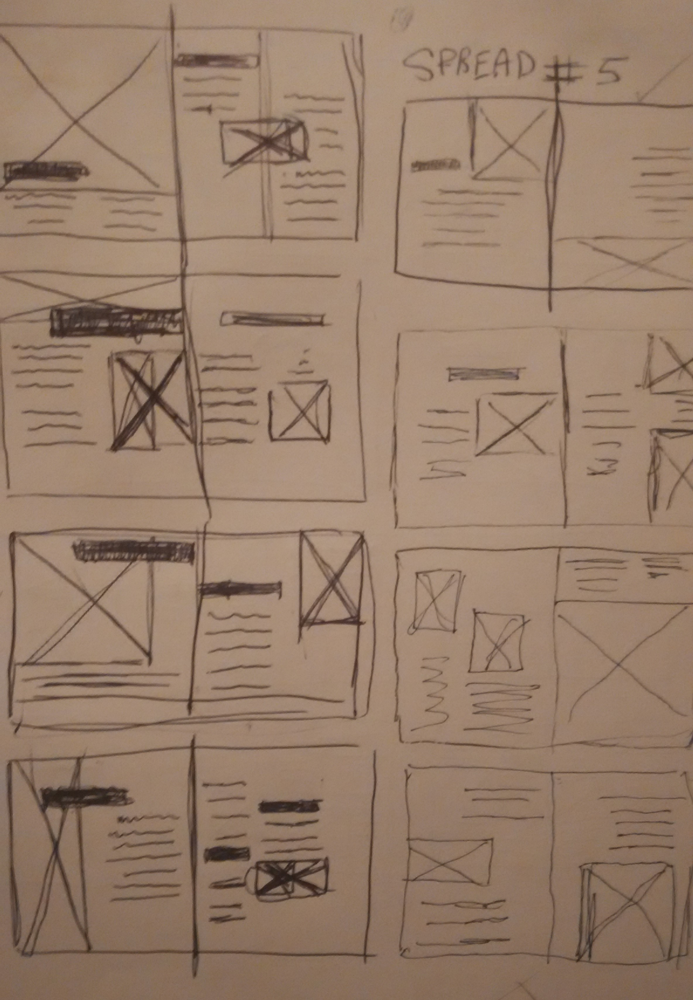
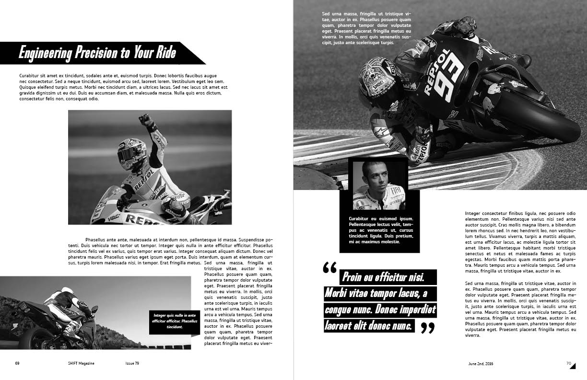
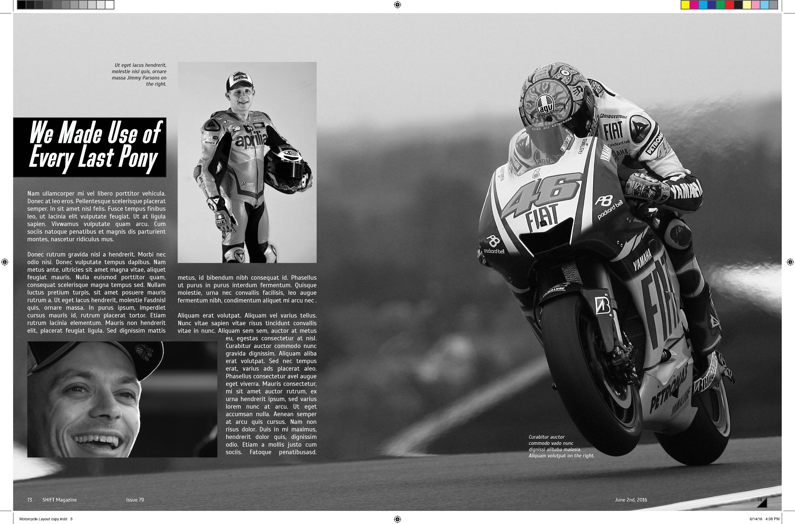
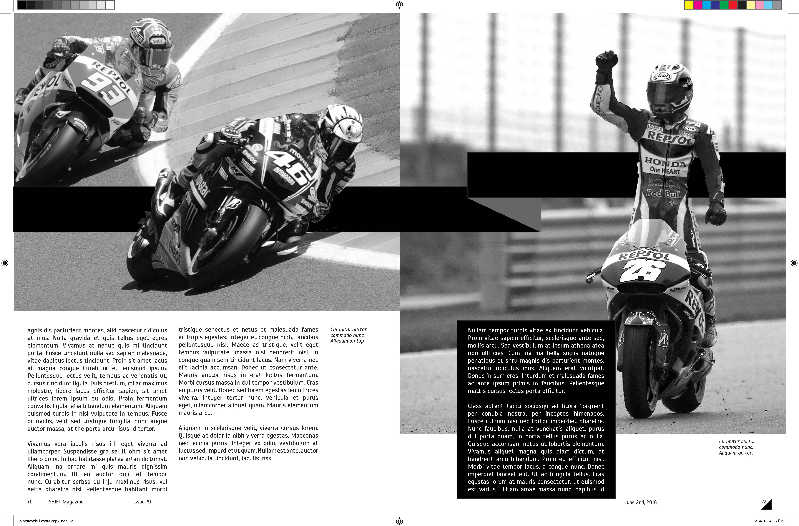
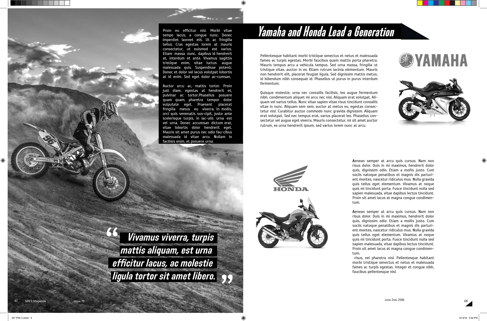

Magazine Spread
Objective
The goal was to design a layout for five spreads that had a minimun number of words, utilized whitespace well, and had appropriate design language for the subject matter.
My Role
This was a school team project with two other members. I designed two of the spreads.
Technologies
- Adobe InDesign
Process
Like many of my other design projects I started out with sketching, and then moving forward with the best layouts.
We then collected all the necessary images and decided on some design elements that we would incorporate into our spreads. This included many diagonal lines, and ribbon type graphics that created depth. I designed the two spreads below.
 My team members designed the spreads below.


Remarks
This project primarily taught me the importance of white space for increasing readability, and guiding the viewers eye. It influences any interface I design to this day, because I often find my human instinct wants to add more graphical elements, but complexity doesn't equal quality. Personally I wasn't a fan of the subject matter, and the design language that followed it, but I do think it was appropriate for it.
>